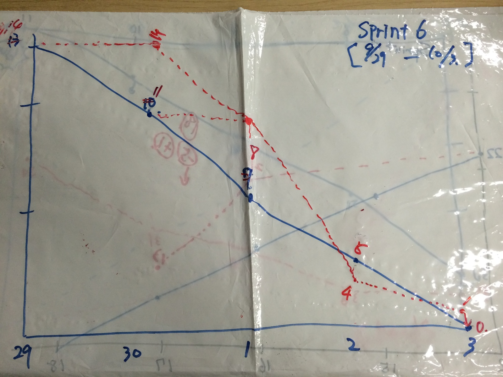

今Sprintはチーム発足以来のバーンダウンだった。ちょっと振り返ってみる
普通のチームのようにメンバ全員の『優先度』に関する意識が変わった気がする。
組織内でハブな立ち位置のメンバは必然的に割り込みが多くなるが。『絶対的に今なのか？』
そういった意識で動く割合が多くなってきたように感じる。
さらに、『稼働可能時間』をスプリング時に都度確認しながらやれてるのがイイ。
全員が集まって決めるモノはどれか？ 全員が集まれる時間はSprintでどれだけ見込めるか。
マネジメントほど『稼働時間』は正確に把握出来ている必要があると感じた。
そうでないと、必要なタイミングで重要は判断が出来ず組織として痛手を被ることに多々なる。
この活動組織パタンでいうと何パタン何だろう・・・
現場に権限委譲する事で現場はのびのびやっている。
ただ、マネジメントからすると『そもそものチームのポテンシャルは？』とか
各チームが『どこを目指してるのか』よく見えない。
マネジメントもチームを経験して、よりフラクタルな組織になる手前なのか？な。
どちらかというと『難易度：低』『効果：低〜中』に取り組んで来た。のが現実
当然の事ながら『成功体験』を共有するためにやってきた事だけど。
これからは、『難易度：高』『効果：中〜高』組織内でそういったものに取り組んで成果を出さないと。
Sprint6のバーンダウンチャートがコチラ
